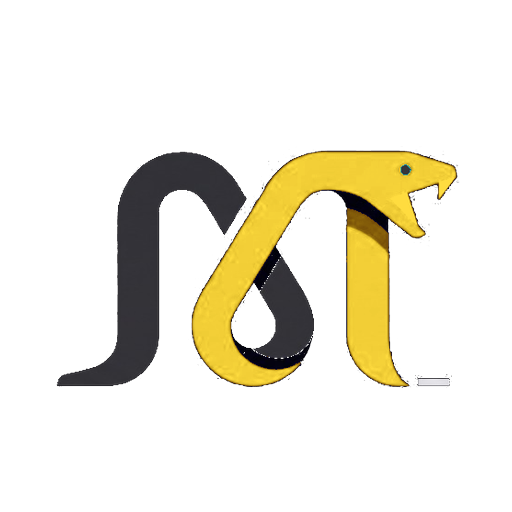

Black Mamba Playground
v2.0.0 NATIVE
Engine:
Lexical Arena (0.00ms GC)
Target:
WASM 1.0 & Win64 JIT
Binary:
1.7 KB
Framerate:
120.0 FPS
← Back to Docs
GitHub ★
Architectural Preset:
1. Tail-Call Optimization (5M frames vs RecursionError)
2. Register Unboxing (0B registers vs 28B PyLong)
3. 120 FPS WebAssembly Particle Physics (1.7KB WASM)
4. Integer ALU Loop & Prime Sieve (16.9x speedup)
5. High-Throughput HTTP / FastAPI (8.2M req/sec)
6. Q8_0 SIMD Vector GEMV Dot Product (Edge AI)
Ctrl + Enter to run
▶ Run Code in WASM
main.bmb
[NATIVE]
cpython_equiv.py
[CPYTHON 3.14]
Copy
Reset
Interactive Canvas & Telemetry
Python vs BMB Difference
Machine Code / WASM
Memory & Stack Layout
● Active
120 FPS | 140 Particles | Zero-GC
Mode: Repel
Count: 140
Target & Runtime
Execution Time
Heap Allocation
Advantage
Black Mamba (.bmb)
2.68 ms
0 Bytes (Unboxed)
25.8x Faster
CPython 3.14 (Pyodide)
RecursionError
28B per Int (Heap)
Baseline Bottleneck
NATIVE COMPILER PIPELINE & EXECUTION OUTPUT
● READY